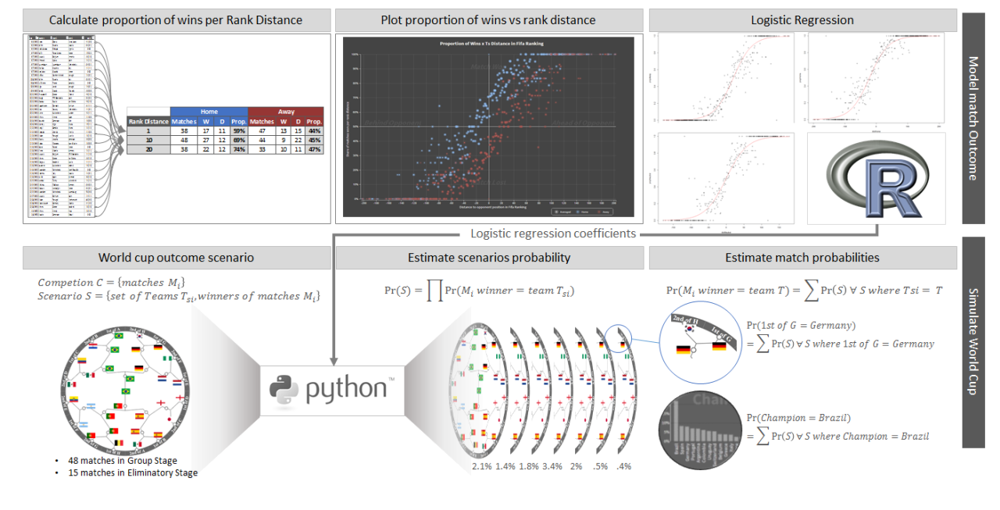
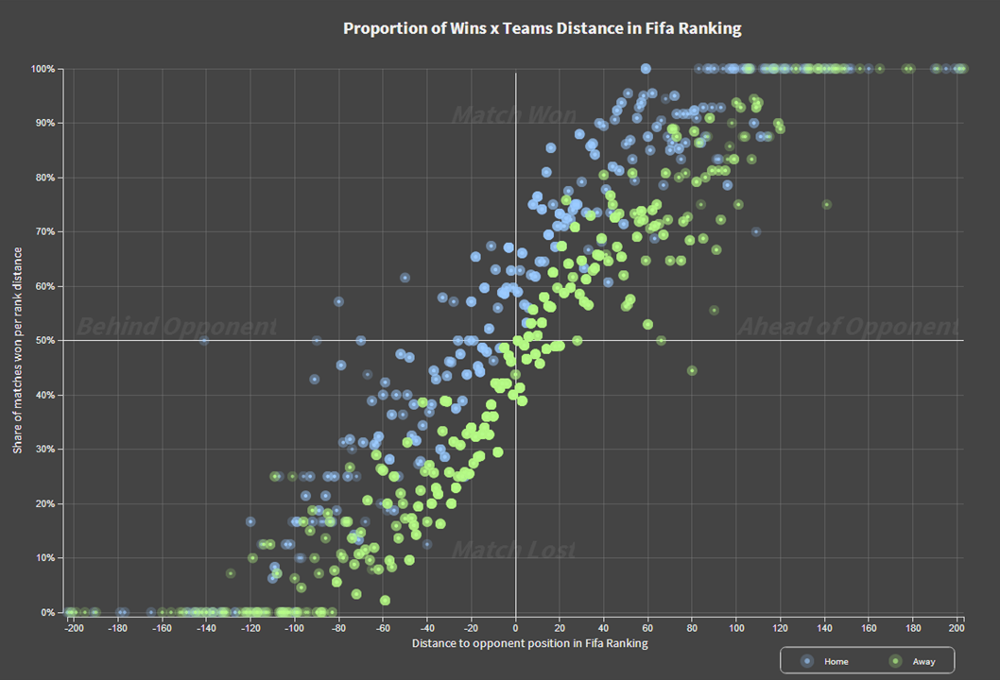

Cognitive AI Architecture
Moving beyond retrieval-augmented generation toward state-space knowledge systems—where enterprise AI maintains persistent beliefs, detects instability, and reasons about what it doesn't know.
Interactive visualizations and applied research—the kind of work I enjoy most.

The estimation methodology behind the World Cup predictions—logistic regression, naive Bayes, and probability modeling.
View →
Modeling international soccer match outcomes with logistic regression and exploratory data analysis.
View →Three continents, multiple industries—from banking systems in São Paulo to ML models on Wall Street to decision science across Asia Pacific. Right now I'm focused on what comes after traditional AI: systems that maintain persistent knowledge, reason about scenarios, and help organizations think better. Patent holder, MIT-credentialed, and the person whose World Cup prediction model ended up in The Economist.
Moving beyond retrieval-augmented generation toward state-space knowledge systems—where enterprise AI maintains persistent beliefs, detects instability, and reasons about what it doesn't know.
Building the organizational infrastructure—data foundations, ML platforms, governance frameworks—that lets a 12-market region make better decisions faster, with AI as a reasoning partner.
Building production systems powered by large language models—from retrieval-augmented generation and agentic workflows to structured reasoning chains—turning frontier models into reliable decision-making tools.
From GenAI equity research platforms to computer vision for branch security—I prototype and ship AI systems where the research meets the business case.